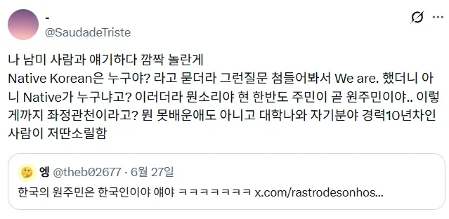
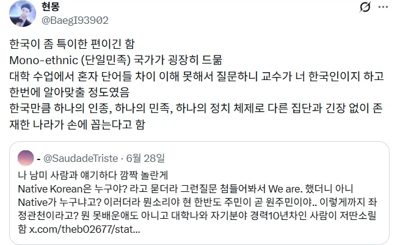
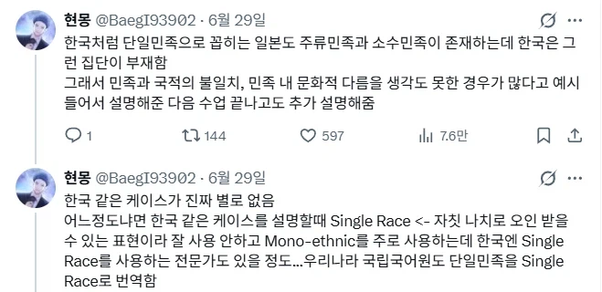
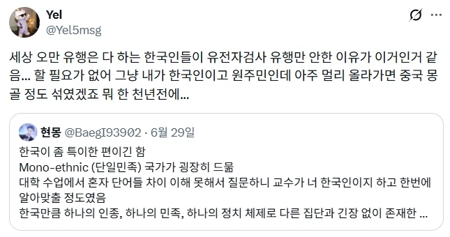

단일민족




단일민족
우리야 끝자락이라지만 폴란드는 신기하네
유럽은 왕례도 걸어서 되지않나
왕래
사실 우리보다 폴란드가 더욱 신기한 사례임
우린 주변국이랑 섞일 유인이 비교적 적은데 폴란드는 복닥대는 유럽 한복판에서 요상하게 정체성을 유지한 편임
어쩌다 소수민족 생겨도 동화되든가 꼬우면 나가라를 밀어붙인 케이스
나라가 3번 사라지고 3번을 부활했는데 그럴수록 민족주의가 더 강해졌다고 하던가?
우리도 1900년대 제주도 사투리는 육지 사람들 못 알아들었음
유럽만 해도 아일랜드 오스트리아 헝가리 불가리아 등 많고 동아시아엔 한국 말고 몽골도 몽골인 단일민족국가임
걍 트짹이 상상친구 얘기하는 거거나
아니면 민족주의 고취시키려고 선동하는 거거나 둘 중 하나임
실질적 문맹
아니 그냥 문맹
단일민족인데 나라가 두개나 있네
헉 ㅋ
아차차
그래서 분단국가라고 함
각 나라마다 소수민족은 있을 수 있어도 그걸 다 네이티브라고 부르진 않을 것 같은데...
네이티브 중국인이라는 개념도 있나?
한족?
근데 한족도 나머지 수십개의 소수민족도 다 중국땅에서 원래 살던 애들이니까
그...설명하기 까다로운데
이건 현재의 중국땅에 집중하면 이해를 못함
중국의 네이티브는 절대 다수의 한족으로 봐야 하는데 황하, 양쯔유역이 한족의 땅임
그 외 지역은 한족한테 침략된 소수민족 땅으로 봐야 이해가 감
주 세력인 한족 기준으로 점령한 현재의 땅을 전부 중국으로 보면 소수민족도 원래 중국 땅에서 살던거 아님? 이 되고, 앞서 말한 한족의 주요 지역이 아닌 소수민족 자치구를 떼놓고 보면 소수민족은 중국 땅에서 사는게 아니게 되는 존나 헷갈리는 상황이 됨
백정 여진족 출신들이잖아. 한민족 아니야..
백정은 역사거치면서 이미 동화되어서 한민족에 속한다 봐야함. 그들만의 문화나 거주지가 따로 있고 구분되야하는데 불가능
사실상 한국인이면 다른피가 섞여도 같은문화 언어 풍습이라 같은민족이라 봐야지
원래 여진족은 우리랑 가까운 관계임
이지라이!!!
이거 민족이랑 인종에 대한 단어구분이 국제학계랑 국립국어원 해석이 달라서 생기는 오류임
국제 학계 기준으로는
한국인은 단일인종이다 X
한국인은 단일민족이다 O
문제 원인이 한국의 역사적 배경이 만든 핏줄 중심 민족관 탓인데 이게 민족,인종을 동일시 하는 병신짓을 해버림
그래서 경상도 전라도 나눠서 싸우나?
성씨에 있긴 함. 흔히 제갈 서문 씨처럼 두자 성씨들은 중국에서 온 경우가 많고, 부산에 본이 있는 성씨(동래 정, 영동 하 등) 쪽도 외국계 성씨들이 많음. 단지 이게 짧게는 몇백, 길게는 몇천년전 소수가 유입되며 성씨를 준 형태라 다들 의미 없게 느낌
아일랜드 네덜란드 독일 오스트리아 헝가리 불가리아 폴란드 리투아니아 라트비아 에스토니아 등등 유럽만 해도 단일민족국가 존나 많은데 트짹년들 또 상상속의 외국친구랑 놀고 자빠졌네
얘는 트짹이랑 수준 비슷한거 같은데 유럽에서 단일민족이라 할만한국가는 헝가리 폴란드 체코 포르투갈 정도고 발트3국은 러시아애들 기어들어가서 주류민족85퍼도 안되는데 쳐 끼우네 ㅋㅋ
전쟁으로 리셋버튼 한번 눌렸음에도
조선시대 유교사상이 여전히 민족성 아래에 깔려있는거 보면
한반도에 600여년이상 자리한 한국가, 단일민족이 대단하긴 함
통일신라로 구세계 한번 싹 통일 했다가 나뉘고, 그 이후 고려로 다시 또 통일, 그대로 조선, 대한민국으로 슛
국제학계에서 말하는 기준으로 단일민족이라 하면
우리나라는 단일민족이 맞음
구성원의 절대다수를 단 하나의 공통적 테두리 안에 집어넣을 수 있기 때문임
근데 이게 우리나라 단일민족 아니야 하는 소리가 나오는 이유는 국가기관 어디 하나가 병신처럼 민족=인종으로 해석해버려서 그럼
외부에서 유입이 없진 않았는데 시간 존나지나고 전쟁으로 전부 합체해버림
실제로 한국에는, 박보검부족이라고 불리는 하이코리안과 싸이부족이라고 불리는 로우코리안이 존재합니다.
애초에 민족이라는 말 자체가 근대에 나온 거니
특이한 나라긴 하지
이제와 생각해 보면
고대 옛조선 그리고 부여의 뿌리를 찾는 방향으로 연구하는게 맞다고 봄
굳이 어디서 온 사람들이냐를 따져 보면
부여 에서
고구리(고구려) 남부여(백제) 청구(부여의 다른 이름)
이후 고구리를 공격한 연나라(모용황의 모용씨는 보용에서 왔고 보용은 부여에서 기원)
대진(발해로 알려져있고 대조영을 구당서에서 고려별종 즉 고구리의 계통으로 기록)
여기에 신라를 더하면 우리의 기원 이라고 할 만한 주류 이고
그 밖에 다른 지역에서 유입된 무리들이 더러 있는거
이를테면 인도쪽, 동남아쪽 의 적은 무리가 왔다고 볼만함
폴란드 정도가 그나마 우리랑 유사함
인구 규모 이 정도 되는 나라 중에 한국이나 폴란드 같은 사례가 거의 없음
에스파냐: 아님
일본: 오키나와가 있음(아이누는 거의 없다고 봐야)
파키스탄: 국명부터가 합성어
나이지리아: 확실한 메이저 공용어만 3개
독일: 북부 사람은 뮌헨 사투리는 알아듣지도 못함
타이: 확실한 소수민족 존재
베트남: 확실한 소수민족 존재